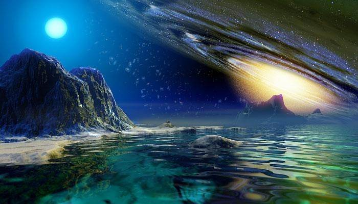

Великие загадки Земли - параллельный мир

"Если эти объекты наблюдались с незапамятных времен и их обитатели всегда вели себя очень похоже, то неразумно утверждать, что это "просто" внеземные пришельцы. Они должны быть чем-то более значимым. Возможно, они всегда были здесь. На Земле. С нами".
"Хотя я принадлежу к тем, кто считает НЛО реальными физическими объектами, я не думаю; что они внеземные в том смысле, который обычно вкладывают в это понятие. На мой взгляд, они являют собой захватывающий вызов нашей концепции реальности, как таковой". Жак Валле
"Особый интерес, проявляемый к НЛО, связан с двумя обстоятелствами. Во-первых, это, по-видимому, самая таинственная загадка из всех, когда-либо стоявших перед человечеством, и, во-вторых, НЛО являются объектом такого массированного и яростного отрицания, что это, несомненно, свидетельствует о реальности феномена". Уитли Стрибер
Предлагаемая вниманию читателей книга принадлежит перу самого известного, самого читаемого и, пожалуй, самого оригинального исследователя феномена НЛО. В ходе обстоятельного и очень увлекательного анализа автор подводит читателя к выводу о том, что феномен НЛО - это не игра воображения и не нашествие инопланетян, а вполне очевидная реальность, только гораздо более сложная, чем идея о внеземных пришельцах.
ВВЕДЕНИЕ
Закрытое сознание, открытые вопросы.
ЧАСТЬ ПЕРВАЯ. ХРОНИКА НЕВЕДОМОГО.
1. Загадочные встречи в прошлом.
2. Крылатые диски и хрустящие лепешки.
ЧАСТЬ ВТОРАЯ. ИНАЯ РЕАЛЬНОСТЬ.
4. Эмоциональный компонент: космическая приманка.
5. Небесный компонент: знамения.
6. Психический компонент: металогика.
7. Духовный компонент: морфология чудес.
ЗАКЛЮЧЕНИЕ.